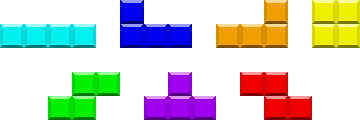

Installing | Skinning | Controls | Scoring | Scenario | Options | Discussion | Legal
LOCKJAW is a free software implementation of the so-called Soviet Mind Game, a highly popular computer puzzle game that involves guiding tetrominoes into neat stacks in a well. This game was designed in the mid-1980s by Russian game designer Alexey Pajitnov and was first implemented in a software product called TETRIS®.* Other products implementing the Soviet Mind Game include Quadra, Abandoned Bricks, KSirtet, F.B.G., N-Blox, and Heboris. While originally developed to parody the behavior of a few notorious implementations of the Soviet Mind Game, LOCKJAW is now a platform for research into the properties of the game, into the effects of rule variations, and into the capabilities of the human mind to react.
Tetrominoes are geometric shapes made of four connected square blocks. There are seven distinct tetrominoes, shaped roughly like letters of the Latin alphabet:

Tetrominoes. Top row: I, J, L, O. Bottom row: S, T, Z.
Some products spell the term as "tetramino", "tetrimino", or "tetrad".
LOCKJAW gameplay screen. Hover over objects to see their names.
The well is 10 blocks wide by 20 rows high. (There are four out-of-bounds rows above the top of the visible portion for a total of 24 rows.) The player can rotate and shift the tetrominoes as they fall in order to pack them tightly into the well. If a tetromino lands on the floor or other blocks and remains motionless for half a second, it locks into place, and the next tetromino begins to fall. The next few tetrominoes to fall are displayed in a queue to the right of the playfield. At any time, the player can swap the falling tetromino with the one in the hold box above the playfield, but a tetromino that has been swapped out cannot be immediately swapped back in. The gray blocks below the falling tetromino are the shadow, which shows where the tetromino will land.
A "line", or a complete row of blocks across the well, will disappear, and everything above it moves down by one row. But if the well fills so high that a tetromino is placed entirely out of bounds or in a position such that the next tetromino does not have room to enter, the player "tops out" and the game is over. So the goal is to stay alive by making more lines.
Installing
The executable included with the official distribution is designed for Microsoft Windows systems. Unzip it into a folder on your hard disk or USB memory card. It ordinarily writes preferences and logs to the current directory, which is most often the folder containing lj.exe. (If you do not want to allow users to write to the program's folder, place an empty file called installed.ini in the same folder as lj.exe. This will make Game Keys and Options write settings to the user's application data folder, commonly C:\Documents and Settings\Gus\Application Data\Pin Eight\Lockjaw.)
The files lj.exe, lj.dat, ljblocks.bmp, and alleg42.dll are required to play. (If you get an error about alleg42.dll, see the instructions on the LOCKJAW download page.) To start the game, run lj.exe in Windows Explorer.
The program should work on any PC running Microsoft Windows 98 or newer operating system with an 800x600 pixel display at 16-bit or greater color depth and DirectX 7 software installed. Its source code is portable to any platform that supports the Allegro library, but it is tested only on Microsoft Windows because the author has access only to machines that run Windows. Occasionally, people manage to build and run it on other operating systems such as GNU/Linux or Mac OS X; if you are willing to maintain a port, get in touch with the author.
For the handheld version, you only need the file lj.gba or lj.nds. Due to limitations in the DS homebrew operating system, the DS version always acts installed, writing user files to the folder /data/lockjaw on the memory card.
Installing from source
To recompile the program, such as if you are testing a patch or porting it to another system:
- Install GNU Coreutils and GNU Make. These are packaged as MSYS from MinGW.org
- Install a GCC toolchain. This is packaged as MinGW from MinGW.org
- Install Allegro 4.2.1 from SourceForge.net
- Install JPGalleg 2.5 from Enhanced Creations++
- Install DUMB 0.9.3 from SourceForge.net
(Editor's note: DUMB has a dumb license, but section 6 allows relicensing under GNU GPL. Update: It appears Debian got the author to relicense it under a straight zlib style license.) - Open a command prompt and cd to the folder containing the file
makefile - Type
make
Lardarse has written a detailed guide of how to recompile the program on Microsoft Windows OS. This guide is included with the source code inside the "docs" folder.
To recompile the program for Game Boy Advance or Nintendo DS:
- Install devkitARM, libgba, libnds, and MSYS using devkitPro Updater at devkitPro.org.
- Install a GCC toolchain, such as MinGW from MinGW.org
- Open a command prompt and cd to the folder containing the file
gbamakefileordsmakefile - Type
make -f gbamakefileormake -f dsmakefile
To recompile all three ports, type make all
TIP: On GNU/Linux, Windows, and several other platforms, GNU Make can compile multiple files in parallel. This can speed up a large rebuild by allowing GCC to compile one file while reading another from disk. Add -j2 to the end of a Make command line to compile two files at once, or if you have a dual-core CPU, add -j3 to have GCC run one core, the other core, and the disk at the same time.
Skinning
You can customize the appearance of LOCKJAW Tetromino Game for PC by using Notepad or any other text editor to create a skin description that lists the images that shall be used. This skin description should be placed in a text file whose name ends in .skin. (You can create and edit .ini and .skin files using Notepad, Notepad++, vi, Emacs, or any other plain text editor.) LOCKJAW recognizes the following commands in a skin description:
ljblocksSRS=image- A grid of block images, used in bounding-box rotation systems (SRS and TOD M4). The image's size size should be 8 columns by 4 rows (usually 192x96 pixels) or 8 columns by 6 rows (usually 192x144 pixels). Rows 1 and 2 are for blocks in the well, and rows 3 and 4 are for the falling piece. If rows 5 and 6 are present, the shadow will use those; otherwise, it will use rows 3 and 4. If blkW or blkH is present, the program uses that size instead of 24x24.
ljblocksSega=image- Same as
ljblocksSRS, but used in other rotation systems. ljconnSRS=image- An image 8 rows and 8 columns in size (usually 192x192 pixels), containing an O tetromino of each color. The skin loader cuts this up to form tetrominoes with the blocks drawn connected, used for blocks in the well and the falling piece (not the shadow or empty areas of the well) in bounding-box rotation systems. If this file is not present,
ljblocksSRSwill be used instead. ljconnSega=image- Same as
ljconnSRS, but used in other rotation systems. If this file is not present,ljblocksSegawill be used instead. color=#RRGGBB- A 3- or 6-digit hexadecimal color (e.g.
#ABCor#D0FFE3) for text in the menus and during the game. If not present, the game will use black. bgcolor=#RRGGBB- A color for the menus' background. If not present, the game will use white.
hilitecolor=#RRGGBB- A color for the background of highlighted text. If not present, the game will use pale yellow (#FFC).
pfcolor=#RRGGBB- A color for text in front of the playfield. If not present, the game will use white.
pfbgcolor=#RRGGBB- An "average" color for the playfield, to be displayed behind the pause screen and during the game over animation. If not present, the game will use black.
ljbg=#RRGGBB- An 800x600 pixel image to be displayed behind the game. If this file is not 800x600 pixels, the image will be resized (sloppily) after being loaded. If this file is not present, the game will use a plain backdrop of the same color as
bgcolor. blkW=length- The width in pixels of each block in the ljblocks and ljconn, if it is not 24 pixels.
blkH=length- The height in pixels of each block in the ljblocks and ljconn, if it is not 24 pixels. This is allowed to differ from
blkW transparentPF=boolean- If this is set to the value 0, tile 0 of
ljblocksSRScovers up the background within the playfield. If this is set to nonzero, the playfield background shows through. bgm=music file- A music file in Vorbis format (
.ogg) or tracker format (.mod,.s3m,.xm, or.it) to be played during the game. You can create Vorbis format files by extracting audio from your CDs to.wavformat using CDex software and converting them with OggDropXPd software. You can download tracker format files from The Mod Archive or create them yourself using the OpenMPT music editor, the continuation of MODPlug Tracker. If this file is not present, the game will not play music. bgmLoopPoint=sampleNumber- For music in Vorbis format, sets the sample at which playback restarts once the music file ends. For example, if your .ogg file is 44100 Hz, 441000 represents rewinding to 10 seconds after the start. Has no effect with tracker format music, which specifies its own loop point, or Rhythm speed curve, whose music isn't supposed to loop anyway.
bgmRhythm=music file- Like
bgm, but used in the Rhythm speed curve. Music tempo should have 64 beats of 60 BPM, 64 beats of 70 BPM, 64 beats of 80 BPM, etc. bgmReadyGo=Boolean- If this is set to the value 0, the background music starts after the "Ready Go" sequence. within the playfield. this is set to nonzero, the background music plays during the "Ready Go" sequence.
bgmVolume=volume- Sets the volume of the music to balance it against the sound effects, where 256 is full volume. If not specified, uses 128; 1 dB louder than this would be 144.
shiftScale=Boolean- When set to 1, moving the falling piece sideways produces sound at a different pitch based on how far the piece is from the left side. (PC version only)
- baseX=distance
- This moves all gameplay graphics to the left (0), middle (200), or right (400) of the screen.
- nextPos=style number
- Controls where the next tetrominoes are displayed. Up to eight can fit to the right of the well, or up to 3 can fit above the well. A value of 0 places the pieces on the right; 2 places them on the top.
wndW=length- Sets the width of the game window in pixels.
wndH=length- Sets the height of the game window in pixels.
You can create more than one skin description file and then switch among them by using the "Skin..." command at the main menu, which produces the following command in lj.ini:
Skin=skin description file- A skin description file. If the skin is not present, the game uses preset file names (
ljblocks.bmp,ljblocks-sega.bmp,ljconn.bmp,ljconn-sega.bmp,ljbg.jpg, andbgm.s3m).
Images can be in Windows bitmap (.bmp), PC-Paintbrush (.pcx), Truevision TGA (.tga), or JFIF/JPEG (.jpg) format. All color depths should be supported. Paths are interpreted relative to the folder containing the .skin file, that is, specifying ljblocksSega=Gradient Blocks.bmp will try to pull Gradient Blocks.bmp from the skin's folder. If you want to create a folder structure inside your skin package, it is best to use forward slashes ('/') instead of backslashes ('\') so that users of Mac OS X and GNU/Linux will be able to use your skin.
Example image and sound files are located in lj-contrib.zip, available from the Skins section of the download page. You can also customize the sound effects by using Allegro Grabber software to edit lj.dat.
Controls
PC
The controls in LOCKJAW Tetromino Game for PC are initially set as follows:
- ← Shift left
- Left arrow key
- → Shift right
- Right arrow key
- ↓ Soft drop
- Down arrow key
- ↓ Hard drop
- Up arrow key
- ↰ Rotate left
- Z, C
- ↱ Rotate right
- X
- ↶ Rotate twice
- W
- ↖ Hold piece
- S, D
- ⇤ Shift far left
- Q
- ⇥ Shift far right
- E
- ↓ Firm drop
- Enter
Controls are configurable to the keyboard or any compatible joystick. (The key labeled "Item" is not used in single-player, and there is no multiplayer yet.) From the main menu, choose "Game Keys..." and then press the keys in order as prompted. If you don't want to bind a key or button to a given function, press a key that you won't use. The key bindings are saved to the file lj-keys.043; if they become unusable, you can delete this file to reset them to the initial settings.
Some controls during game play are hard-coded to keyboard keys:
- Esc pauses and resumes the game. Holding Esc for one second stops the game and goes to a result screen.
- [ (left bracket) starts and stops demo recording, and ] (right bracket) starts and stops demo playback. An icon for stop, record, or play appears in the upper left corner of the window. The demo is saved to a file called
demo.ljm. Caution: Demos recorded on one version of LOCKJAW may not play correctly on another version. Recording another demo will overwrite the last demo, so make sure to rename the demo when you record a good one.
In the menus, Esc acts as Rotate Left, and Enter acts as Rotate Right. In all screens, Print Screen (F13) saves a copy of the display to the file ljsnap.bmp.
GBA and DS
Controls in the Game Boy Advance and Nintendo DS versions are hardcoded as follows:
- ← Shift left
- Left on Control Pad
- → Shift right
- Right on Control Pad
- ↓ Soft drop
- Down on Control Pad
- ↓ Hard drop
- Up on Control Pad
- ↰ Rotate left
- B Button
- ↱ Rotate right
- A Button
- ↖ Hold piece
- L Button
In the options menu, the B and A Buttons change screens, and the Start Button starts the game. Pressing A on the last screen of options also starts the game. Start pauses and resumes the game.
Movement features
Unlike some other S.M.G. implementations, LOCKJAW features Initial Actions. Holding a rotate button while a tetromino enters the playfield will cause the action to be performed the moment the tetromino enters. This is important for fast play. In addition, the hold key works at any time; if a piece is not falling yet, it will swap the hold piece with the next piece.
LOCKJAW also implements the so-called Super Rotation System (SRS), which allows a tetromino to rotate around obstacles for more mobility across the pile. Some players abuse SRS by rotating a piece in place repeatedly, but this will result in poorer scores in timed gimmicks. To replace this behavior with the "Sega style" behavior used in Arika's Tetris The Grand Master 3: Terror-Instinct, change the Options described below.
Scoring
LOCKJAW Tetromino Game allows the player to choose among several methods of calculating the score for a line clear. The terms "single", "double", "triple", and "home run" refer to clearing 1, 2, 3, or 4 lines with one tetromino. (A "home run" is called a "tetris" in some other games.) "T-spin" means rotating a T piece as it lands to fit into a tight space.
In LJ and TDS, making a bonus line clear when your last line clear was also bonus ("back-to-back homer" or "back-to-back T-spin") will produce extra points. Making a T-spin that does not clear a line has no effect on bonus state.
LJ
As you clear lines, you also produce garbage that depends on the number of lines that you clear with a single tetromino. In single player mode, you earn 100 points per line cleared and 200 points per line of garbage, and in multiplayer mode (which is not yet implemented), the garbage will push up the blocks in another player's well.
| Lines | Garbage | Score | Bonus | |
|---|---|---|---|---|
| 1 line | 1 | 0 | 100 | No |
| 2 lines | 2 | 1 | 400 | No |
| 3 lines | 3 | 2 | 700 | No |
| 4 lines | 4 | 4 | 1200 | Yes |
| 1 line T-spin | 1 | 2 | 500 | Yes |
| 2 lines T-spin | 2 | 4 | 1000 | Yes |
| 3 lines T-spin | 3 | 6 | 1500 | Yes |
| Back-to-back bonus | 1 | 200 | Yes |
LJ has a variant called "nerfed spin" where T-spins produce half the garbage and only 300 points per line.
Fibonacci
This extension of the scoring curve seen in The New Tetris is based on the Fibonacci sequence.
| Lines | Score |
|---|---|
| 1 | 100 |
| 2 | 200 |
| 3 | 300 |
| 4 | 500 |
| 5 | 800 |
| 6 | 1300 |
| 7 | 2100 |
| 8 | 3400 |
| 9 | 5500 |
| 10 | 8900 |
| 11 | 14400 |
| 12 | 23300 |
| 13 | 37700 |
Further lines score 20,000 points per line.
Hotline
Only lines cleared on specific rows are worth points. There is no back-to-back bonus nor T-spin bonus.
| Row | Score |
|---|---|
| 5 | 100 |
| 10 | 200 |
| 14 | 300 |
| 17 | 400 |
| 19 | 500 |
| 20 | 600 |
TDS
Each line clear score is multiplied by a section number, computed by dividing the total number of lines cleared before this line by 10 and adding 1. Thus, lines cleared later in the game when gravity is faster are worth more than lines cleared earlier. In TDS, the section number stops increasing after 190 lines.
| Lines | Score | Bonus | |
|---|---|---|---|
| 1 line | 1 | 100 * section | No |
| 2 lines | 2 | 300 * section | No |
| 3 lines | 3 | 500 * section | No |
| 4 lines | 4 | 800 * section | Yes |
| 0 lines T-spin (wall kick) | 0 | 100 * section | |
| 0 lines T-spin (no wall kick) | 0 | 400 * section | |
| 1 line T-spin (wall kick) | 1 | 200 * section | Yes |
| 1 line T-spin (no wall kick) | 1 | 800 * section | Yes |
| 2 lines T-spin | 2 | 1200 * section | Yes |
| 3 lines T-spin | 3 | 1600 * section | Yes |
| Back-to-back bonus | 50% more | Yes |
NES
Each line clear is multiplied by the section number, as in TDS. The section number does not stop increasing. There is no back-to-back bonus nor T-spin bonus.
| Lines | Score |
|---|---|
| 1 | 40 * section |
| 2 | 100 * section |
| 3 | 300 * section |
| 4 | 1200 * section |
Drop scoring
Some games award extra points every time the tetromino lands if the player used soft drop or hard drop. LOCKJAW can simulate these.
- None
- Award no points.
- Continuous
- Award 1 point per row for hard drops. Award 1 point per row between when a soft drop starts when the piece lands. A soft drop that is started, then stopped, then started again, will award points only for the last soft drop.
- Drop
- Award 1 point per row for hard drops and for soft drops, whether or not they are interrupted.
- Soft x1 Hard x2
- Award 1 point per row for soft drops and 2 points per row for hard drops.
lj-scores.txt
On the PC and DS version, each game's results are written to standard output and lj-scores.txt once it ends. This way, the user can copy the results to an online forum, or the user can lj | something else or tail -f lj-scores.txt | something else in order to have an external program analyze each game as it finishes.
Scenarios
In the PC version, scenarios are predefined sets of rules for the game. Most scenarios leave several rules unspecified so that you can further customize them in Options. On the Play menu, you can choose from over ten preset scenarios, or you can design your own rules in Options and then activate them with Custom Game.
Future versions of LOCKJAW Tetromino Game will allow the user to edit scenarios and to use scenarios on handhelds.
Options
In Tetris, rules change you. But in LOCKJAW, you change the rules:
Definitions
- Frame
- All video games are turn-based. Real-time games make each turn take a fraction of a second, where each turn lasts only one frame of animation. LOCKJAW always uses 60 frames per second, regardless of the refresh rate of the attached monitor.
- G
- 1G is a velocity of 1 cell per frame, or 60 cells per second. "20G" means that tetrominoes fall through the entire height of the well in one frame.
- Hertz (Hz)
- 1 Hz is a rate of 1 event per second.
Gimmicks
- Marathon
- The game gets faster and faster as each tetromino enters the well. Play until you top out. Some people play for lines; others play for points.
- 40 lines
- Play until you clear 40 lines, or until you top out, whatever comes first. The author's record is 1:00.70.
- 180 seconds
- Play for three minutes, or until you top out, whatever comes first.
- Vs. w/Items
- This mode is a joke. After the first 7 pieces you get random starting orientations, no rotation, and hidden next pieces, and the speed goes to 1G. Every time you're about to get an I tetromino, either you get 2 lines of garbage or the columns of blocks in the well are shuffled. It is debatable whether this mode is even playable. This mode exists primarily as a criticism of a similar mode in the game Tetris DS.
- Baboo!
- Standard S.M.G. with zero gravity, ending after 300 keypresses. Some players recommend practicing Baboo!, claiming that the way to fast play in other gimmicks involves using as few keystrokes as possible to place each tetromino.
Well rules
- Well width
- Standard S.M.G. uses 10 columns; it can be set anywhere between 4 and 12.
- Well height
- Standard S.M.G. uses 20 rows; it can be decreased to 8.
- Enter above ceiling
- Normally, tetrominoes enter the well above the ceiling. But when this is turned off, tetrominoes enter inside the well.
- Speed curve
- This controls how fast tetrominoes fall:
- Exponential is the familiar behavior where the game speeds up gradually as pieces enter the well. For the first 600 pieces, it speeds up every 30 pieces, doubling every 60. Then, the gravity hits 20G, and lock delay begins to decrease in harmonic progression: 2/(3 + 9/256 * (n - 609)) seconds.
- In Zero, tetrominoes do not fall on their own. It's pointless for setting endurance records but useful for practicing tricky stacking methods.
- Rhythm starts at 0G or 20G; if your play speed drops below the stated level, tetrominoes will lock on their own. This level starts at 60 tetrominoes per minute and increases by 10 every 64 beats.
- Master and Death are similar to Exponential and Rhythm but resemble some Japanese S.M.G. implementations: every line cleared advances the level by 1, and except at levels 99, 199, 299, etc., so does every tetromino dropped. (Death is a bit faster than starting Master at level 600, where blocks fall at 20G. Death 300+ is what it sounds like: starting Death at level 300.)
- NES and Game Boy speed curves approximate the behavior of the classic 8-bit games published by Nintendo. Game Boy Heart is like Game Boy but starting 100 lines in.
- Max entry delay
- When set greater than 0, there is a brief delay before each tetromino enters the playfield, and another delay when one or more lines are cleared. (So if you want fast play, make more lines at once.) During entry delay, sometimes called "ARE", the player can hold the next piece, rotate the next piece (if turned on), and charge up the autorepeat of sideways movement. This delay is considered a "maximum", as it decreases over the course of the game in Master and Death speed curves. Caution: When entry delay is on, hard drop also functions as an Initial Action.
- Piece set
- This selects which pieces are used:
- "All pieces" deals all tetrominoes, plus trominoes of 3 blocks (I3, L3) and the domino of 2 blocks (I2). In history randomizer, it starts with I, J, L, T, or L3.
- "Tetrominoes" includes the seven pieces with four blocks (I, J, L, O, S, T, and Z). In history randomizer, it starts with I, J, L, or T.
- "No sticks" is one stick short of a bundle because it generates all tetrominoes other than I, which is sometimes called a "stick" or "bar". It's useful for practicing "push" and T-spins. In history randomizer, it starts with J, L, or T.
- "SZSZ" deals only S and Z tetrominoes. History randomizers will deal an alternating sequence (S, Z, S, Z). It was used in a proof that S.M.G. with the Memoryless randomizer cannot be played forever.
- "iCheat™" generates only I tetrominoes, simulating cheat modes on some other games.
- "T-Party" generates only T tetrominoes.
- Randomizer
- This selects the function used to shuffle the pieces:
- "Memoryless" has a more or less equal probability of choosing each piece at any given time, as seen in most S.M.G. implementations (including Tetris brand games from before 2001).
- "Bag" treats the pieces as sets and deals a randomized sequence of all different pieces, as if drawing them from a bag, before the next set. Advanced players like to "count cards", keeping track of the "seams" between bags of seven tetrominoes. This randomizer has a weakness: it can easily be played forever.
- "Bag + 1" is like Bag but tosses a duplicate piece into each bag.
- "Double bag" adds an extra copy of each piece to the bag, as a compromise between the even distribution of Bag and unpredictability of Memoryless.
- "Strict history" will not deal a piece that was recently dealt. For tetrominoes, it will not deal one of the previous four. This way the player never gets a clump of all the same piece.
- "History 6 rolls" is similar to strict history but sometimes (about 3.5%) generates repeats of recent pieces.
Movement rules
- Hold piece
- Controls the behavior of the hold piece. Empty leaves the hold box empty at the start of the game; the first time the player uses hold piece, the falling piece goes to the hold box, and the next piece enters instead of the hold piece. Random fills the hold piece with a random piece at the start of the game. Hold to next holds to the next piece box instead of the hold box. Off disables hold entirely.
- Rotation system
- In different rotation systems, tetrominoes may enter the field at different positions, and they behave differently when rotated against the walls and the other blocks. This option can be set to SRS (easiest), TOD M4 (like SRS in free space but less forgiving in wall kicks), Arika (like Sega with basic wall kicks), Sega or NES or Game Boy (no kicks), or Tengen (strict, with even stranger twists). Apart from one set of graphics for SRS and TOD M4 and one set for other systems, this option does not affect the colors of the tetrominoes; use the
.skincommands to select replacement images that contain other colors. It also does not affect lockdown behavior. - Floor kicks
- SRS and Arika rotation systems move a tetromino upward when a rotation would strike the floor or blocks under the tetromino. As this makes some tetrominoes easy to spin in place, this can detract from the immediacy of the game. This option limits the number of times each tetromino can be kicked upward.
- Lockdown
- Controls the interpretation of the delay between when each tetromino lands and when it locks. Classic disables the delay, as was the case in the oldest S.M.G. implementations; this makes slide moves more difficult. Entry reset allows only a constant amount of this delay per tetromino; instead of resetting, the lock timer pauses while the tetromino is falling. With Step reset, the delay resets every time the tetromino moves downward. With Move reset, the delay resets every time the tetromino moves at all. (Outside of Zero and Exponential speed curves, Classic behaves as Step reset.)
- Lock delay
- Controls the length of this delay. It can be set to a constant amount of time, or it can be controlled by the speed curve.
- Deep drop
- When this is on, a piece can fall past blocks in the playfield to fill appropriately shaped holes. This is potentially more controversial than the "T-spin triple" of SRS.
Line clear rules
- Line clear delay
- Controls the length of the delay after a line clear. It can be set to a constant amount of time, or it can be controlled by the speed curve.
- Clear gravity
- Controls what happens to blocks after a line clear. Naive means that blocks move down by exactly the number of cleared lines below them, potentially causing floating blocks. In Sticky, tetrominoes stick together when they lock, and contiguous groups fall together. It's possible for a group to fall past the cleared lines, causing chain reactions. Sticky by color is similar to Sticky except only blocks of a single color stick together. Cascade treats each piece as a separate entity unless Gluing is turned on.
- Gluing
- When turned on, this controls how pieces glue themselves together after they land:
- In Square, when the player makes a 4x4 block square out of four complete tetrominoes, it will become a large square of solid gold or silver. Pieces that have been broken by a line clear cannot make squares and are thus drawn as garbage. A line containing a row of a silver square is worth 500 bonus points; a line containing a row of a gold square is worth 1000. Caution: This mode is displayed incorrectly if the current skin lacks the appropriate
ljconnfile. - Sticky and Sticky by color act much like the corresponding Clear gravity settings. If a skin using connected blocks has a bright border around each piece, this can be used to draw a white border around each mass of pieces. Garbage always acts Sticky by color.
- In Square, when the player makes a 4x4 block square out of four complete tetrominoes, it will become a large square of solid gold or silver. Pieces that have been broken by a line clear cannot make squares and are thus drawn as garbage. A line containing a row of a silver square is worth 500 bonus points; a line containing a row of a gold square is worth 1000. Caution: This mode is displayed incorrectly if the current skin lacks the appropriate
- Scoring
- Choose a scoring method for line clears, as described above.
- Drop scoring
- Choose a scoring method for drops, as described above.
- T-spin detection
- Controls the definition of a T-spin used by the scoring method. When turned off, T-spins are not rewarded. When set to Immobile, a line is a T-spin line if the tetromino that completes it could not have moved left, right, or up. When set to 3-corner T, a line is a T-spin line if all of the following are true:
- The line is completed with a T tetromino.
- At least 3 of the 4 boxes diagonal to the center of the tetromino are either the wall or occupied with a block.
- The tetromino has not shifted sideways or down by one or more spaces since it was last rotated.
- Garbage
- Pushes up the lines in your playfield. In Level 1 through 4, a simulated computer opponent occasionally sends you this many lines of garbage. In Home Run Derby, every line you clear other than with a home run or a T-spin gives you garbage. In Drill and Preload Zigzag, the well is full of garbage except for the top few rows. Be prepared to rely on infinite spin for the first few lines until your skill improves.
Control options
- Max sideways delay
- This controls the time the left or right key has to be held down before sideways movement begins. This can be set in 16.7 ms increments from 16.7 ms to 300 ms. This delay is considered a "maximum", as it decreases over the course of the game in Master and Death speed curves.
- Sideways speed
- This controls how fast the tetromino moves sideways. It can be set at Instant (tetromino reaches side instantly as soon as sideways delay expires) or 10 to 60 moves per second.
- Initial sideways motion
- When this is turned on, the tetromino can move sideways in the first frame that it appears. This affects mobility at very high speeds (e.g. Death or Rhythm).
- Initial rotation
- When this is turned on, the player can rotate a piece before it enters by holding down a rotate button.
- Allow diagonal motion
- When this is turned off, the Left, Right, Up, and Down keys will be ignored if Left or Right is pressed at the same time as Up or Down. Some players who use joysticks or gamepads claim that such "4-way" logic reduces misdrops. Keyboard players should leave it turned on, as it is necessary for "Lock on release" to work properly.
- Soft drop speed
- Controls how fast the tetromino moves downward in a soft drop. Can be set to 1G, 1/2G, or 1/3G.
- Soft drop
- Controls how tetrominoes behave when they land after being soft dropped with the Down key. "Lock" means that they will lock instantly. "Slide" allows the player to place a tetromino under an overhang in one smooth motion (move down, move sideways, then press Up to lock). "Lock on release" is similar to "Slide" but locks when the player lets go of Down.
- Hard drop
- Controls how tetrominoes behave when they land after being hard dropped with the Up key. "Lock" means that hard-dropped tetrominoes will lock instantly. "Slide" allows the player to place a tetromino under an overhang in one smooth motion (move down, move sideways, then press Down to lock). (The "Firm drop" key acts as a hard drop set to "Slide".) "Lock on release" is similar to "Slide" but locks when the player lets go of Up.
Display options
The details may vary between the PC version and the GBA and DS versions:
- Shadow
- Controls how the falling tetromino and its shadow are displayed. It can show the falling tetromino along with a transparent colored shadow, opaque colored shadow, or colorless shadow. It's also possible to hide the shadow entirely or (for experts only) hide both the shadow and the falling tetromino.
- Hide blocks in well
- When turned on, hides the blocks that have locked down in the well. Useful for practicing for "invisible challenge" in another game.
- Next pieces
- Controls the number of previewed pieces displayed next to the well.
- Smooth gravity
- When this is turned off, tetrominoes fall in units of one block. When turned on, they fall pixel by pixel, and only the bottom edge of each block in a tetromino is tested for collision against the blocks in the well.
- Next above shadow
- Controls the number of previewed pieces displayed above the shadow. (PC version only)
- Drop trails
- When this is turned on, hard drops and fast piece gravity cause a piece to make a trail as it falls. It makes players feel faster at the game. (PC version only)
- Pause on task switch
- When turned on, automatically pauses the game when the player switches to another window. (PC version only; DS version always pauses on lid close)
- Record all games
- Automatically records each game to demo.ljm. Remember to rename your record-setting replays. (PC version only)
- Display
- Choose full screen or windowed mode. If windowed mode does not work, try excluding LOCKJAW from your window decoration theming program. (PC version only; GBA and DS always run in full screen)
The PC version saves these options to lj.ini every time you exit the options screen. Other options not shown are also saved to lj.ini and can be changed with a text editor.
Discussion
If you want to discuss the game, you can do so at TetrisConcept.com forum.
If you want a Tetris shot, ask your doctor.
Legal
Copyright 2006–2008 Damian Yerrick <tepples+lockjaw (at) spamcop (full stop) net>. This manual is under the following license:
This work is provided 'as-is', without any express or implied warranty. In no event will the authors be held liable for any damages arising from the use of this work.
Permission is granted to anyone to use this work for any purpose, including commercial applications, and to alter it and redistribute it freely, subject to the following restrictions:
- The origin of this work must not be misrepresented; you must not claim that you wrote the original work. If you use this work in a product, an acknowledgment in the product documentation would be appreciated but is not required.
- Altered source versions must be plainly marked as such, and must not be misrepresented as being the original work.
- This notice may not be removed or altered from any source distribution.
The term "source" refers to the preferred form of a work for making changes to it.
The LOCKJAW software described by this manual is distributed under the GNU General Public License, version 2 or later, with absolutely no warranty. See COPYING.txt for details.
* Tetris is a trademark of The Tetris Company. The Software is not sponsored or endorsed by Alexey Pajitnov, Tetris Holding, Apple, Cloudmakers, Free Software Foundation, Microsoft, or Nintendo.